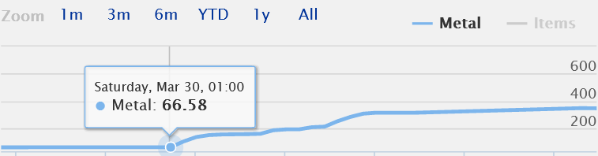
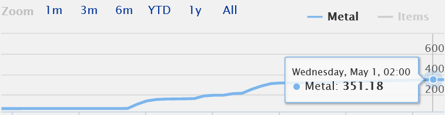
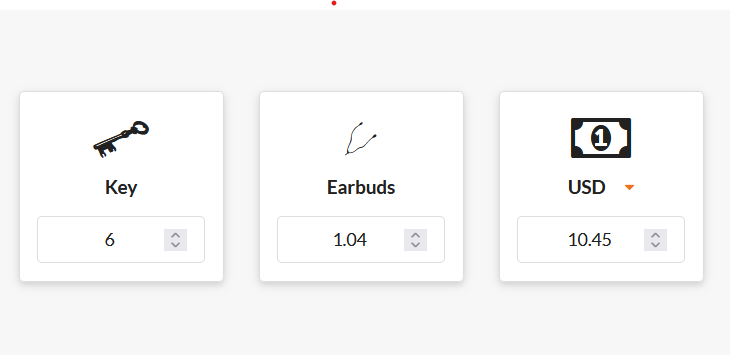

Making 560% returns online trading
... and I wouldn't recommend it.
For some background, in the multiplayer arena shooter Team Fortress 2, players can earn various virtual items over the time spent playing. A player can expect to recieve over a dozen different weapons weekly, which expand the classes they are playing in a multitude of ways. The player can also earn, although much more rarely, hats. Cosmetics and hats, which do not have any effect on the gameplay, but simply make the player's character look a bit different.
Hat drops are rare. Very rare. Over my own playtime, which sits very closely under the border of a thousand hours, I'd estimate I recieved maybe two or three cosmetics randomly. These cosmetic items can be earned in other ways though. Buying directly from the game's store and opening crates (lootboxes) are certainly options, however these are highly costly and generally unrecommended.
Instead, players opt to make use of the Steam Trading feature, allowing players to swap items from certain games directly. In fact, an entire marketplaces have been built, allowing players to make informed decisions with regards to buying... virtual hats.
The Items

This hat costs 90$ to wear

These cats? 145$

This golden pan, of which there are only ~300 in existence? 5600$
Before I talk about my trading escapades, let's quickly explain the currencies of the marketplace. Any two weapons for the same class can be crafted into Scrap Metal. Three scraps make a Reclaimed Metal, three reclaimeds make a Refined Metal. Most hats cost roughly 1.33 refs, however there is also a higher currency - Keys. Neither metals can be purchased, keys can however. Whilst keys can be used to open crates, this use is mostly unprofitable and between traders even looked down upon.
At the time of writing this article a key costed 50 refs, but has since risen (despite the key depression, which was a real thing) to 69 Refined Metal for a key. As metals were easier and easier to craft, supply increased, demand dropped and their value compared to keys (and USD) has fallen significantly. Basic economics.
The Hustle
On March 30th, I started with 66 metal. I quickly liquidated most of the items I had earned by playing and started hustling. There are several ways to earn money and the marketplace often resembled the markets of good old days. You could join a trading server and just start asking for anyone to buy your things, you could try convincing absolute newbies to give you their "useless" cosmetics for "cool" weapons. Yes, scams. There were lots of scams.
If one wanted to liquidate their inventory quickly to get keys, which can be sold on marketplace for Steam account balance, one would usually head out to one of the various sites offering automated trades. These sites offer to buy your items quickly for roughly 90% of their real value and offer them up to other people for 105-110% of the value. It was a nice business, you take cut from each transaction, the people get their keys quickly, it's a good deal.
So what did my 18 year old self do? Did I program one of those sites, using leet programming knowledge? No, not really, I couldn't really program at that point.
What I did do was notice something. Disrepancies.
The site offered a hypothethical item for 50 refs, however the value of the item may have been 53 on other marketplaces. So I bought it from a bot, hit up the buyer and pocketed the difference. Yes, you read that right, I was a middleman for a middleman. But it worked, it definitely worked. And I got richer and richer, trading more and more expensive items and pocketing more and more of the difference.
The Results
On March 30th, my account value was 66 refs. Over the next month I'd grind, trade, even create an own trading bot (download it from someone's git, install node.js and leave it running), leading to a total value of 351 refined metal on May 1st.

That's ~300 metal worth of profit, so taking the average amount of 50 ref. for a key at the time, that ends up with 6 keys worth of profit, leading to a grand profit, over the month of trading, of...

10 bucks.
Probably should've stuck to studying.